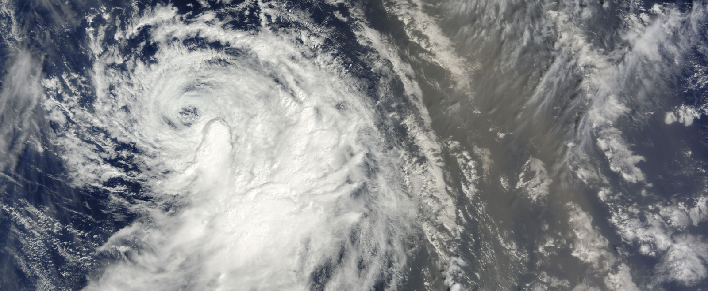
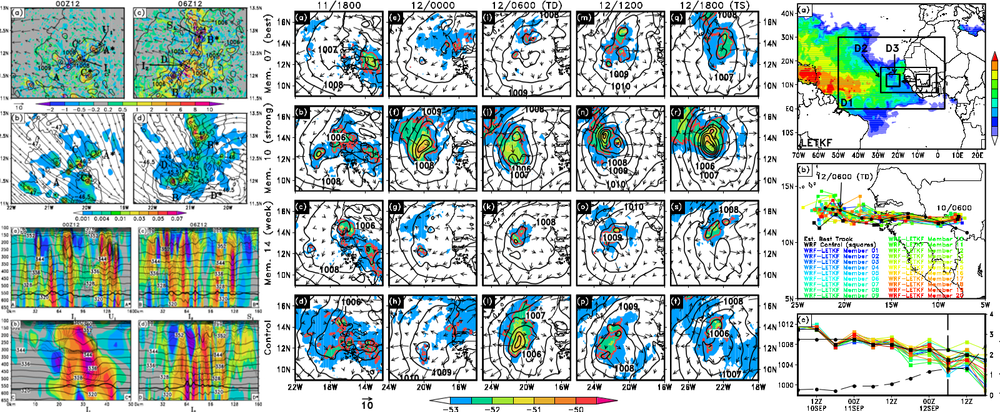
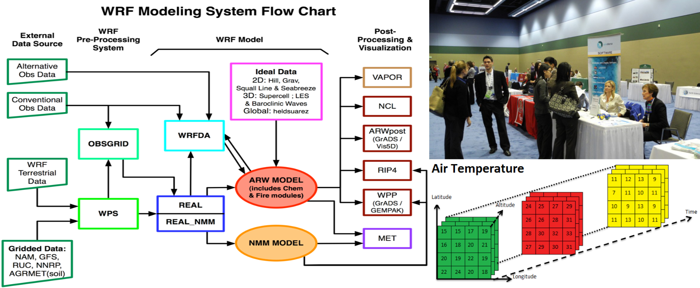

-

-

Advanced cloud-resolving weather modeling -

Viewing the atmosphere in innovative ways -

Simplifying the world of weather
Update Sep. 2014: Website migration is nearly complete! Since graduating with my Ph.D. in late March 2014, I have been working as the Director of Scientific Modeling at Weather Analytics, based in Bethesda, MD. To the right are snapshots of some of my recent work and areas of interest; please explore more through my website for more about me!
Combining the Weather Research and Forecasting (WRF) numerical weather model with high-resolution weather data and high-performance computing (HPC) to facilitate a better understanding of our atmosphere and the impacts it has on our daily lives.
Using novel analysis techniques and ideas to assess meteorological phenomena and their impacts on individuals, businesses, and beyond.
Enabling meteorological data discovery through an excellent understanding meteorological data types, variables, and accessibility.
Ph.D. in Atmospheric and Oceanic Science. University of Maryland, College Park, MD. August 2009 - May 2014.
M.S. in Atmospheric and Oceanic Science. University of Maryland, College Park, MD. August 2009 - May 2012.
B.S. in Meteorology, Minor in Mathematics. Millersville University of Pennsylvania, Millersville, PA. August 2005 - May 2009.
Graduated Cum Laude from Millersville University of Pennsylvania with a 3.97 GPA within the meteorology major.
Dean's List at Millersville University for the Fall 2006, Spring 2007, Fall 2007, Spring 2008, Fall 2008, and Spring 2009 semesters.
Undergraduate courses:
Atmospheric Dynamics I/II; Atmospheric Thermodynamics; Physical Meteorology; FORTRAN; IDL for the Earth Sciences; Mesoscale Meteorology; Synoptic Meteorology; Climate System Dynamics; Atmospheric Chemistry; Boundary Layer Meteorology; Satellite Meteorology; Statistical Meteorology; Numerical Weather Prediction/Modeling; Ordinary and Partial Differential Equations; Statistics; and Linear Algebra.
Full list of relevant undergraduate courses taken: 

Graduate courses:
Atmospheric and Oceanic Dynamics I/II; Mesoscale Meteorology; Synoptic Meteorology; Atmospheric and Oceanic Climate; and Atmospheric Modeling; Data Assimilation and Predictability.
Full list of relevant graduate level courses taken: 

Downloadable in the following formats: 

Recipient of 2012 NASA's
Earth and Space Science Fellowship, with renewal for the 2013 and 2014 academic years.
My accepted proposal, An Investigation of Tropical Cyclogenesis From African Easterly Waves, can be accessed in the following forms: 

Recipient of the 2012 Eugene Rasmusson Fellowship for outstanding student who has advanced to candidacy from the University of Maryland Department of Atmospheric and Oceanic Science.
Best natural sciences poster at the Ninth Annual Symposium of the Burgers Program for Fluid Dynamics (November 2012).
Computing:
Adept in: Unix/Linux Computing Environment; Bash Shell Scripting; High-performance Computing and Cluster Management; Amazon's Elastic Computing Cloud (EC2) infrastructure; FORTRAN; Meteorological file and variable manipulation
Proficient in: Matlab; LaTeX Word Processing; HTML; Python; Interactive Data Language (IDL)
Other:
Adept in: Scientific writing and the publication process; Giving scientific presentations
Management experience, with an emphasis on tasking prioritization and focus.
Interests:
Mesoscale Meteorology; Tropical Meteorology; Numerical Weather Prediction/Models; Application of Meteorological Research to Business Solutions; Planetary Boundary Layer Meteorology; Statistical Meteorology; and Synoptic Meteorology.
Current:
Developing new meteorological techniques and parameters to enable better decision making for businesses. I am actively involved in the creation of new weather-related indices, variables, and ways to present weather data in a clear and concise manner. Additionally, I have a major focus on improving numerical weather modeling for business-related purposes using the Weather Research and Forecasting (WRF) numerical weather model.
Investigating the dynamics, thermodynamics, and predictability of tropical cyclogenesis (TCG) using advanced, high-resolution numerical weather modeling and analysis techniques. This work includes running the WRF numerical weather model at very high spatial resolutions (1 km), creating ensemble forecasts using perturbed initial conditions, and utilizing advanced statistical methods such as Empirical Orthogonal Functions (EOFs). My research is in collaboration with Dr. Da-Lin Zhang, a professor at the University of Maryland, College Park. Dr. Zhang is an expert in tropical and mesoscale meteorology, including the numerical weather modeling of such meteorological phenomena.
Previous:
Undergraduate researcher for the Linked Environments for Atmospheric Discovery (LEAD) project, a multi-institutional project aimed at making meteorological data and numerical weather modeling more accessible to the public. For several years at Millersville University, I was actively involved in building the educational foundation of the program, which included running WRF to test the capability of the technological infrastructure in place for the program. I also tested the output of the high-resolution WRF simulations using the Integrated Data Viewer (IDV). IDV is an advanced Java-based scientific data viewer with 3D capabilities that is actively being developed by the Unidata program, apart of the University Corporation of Atmospheric Research (UCAR), which is funded by the National Science Foundation (NSF).
My senior year at Millersville University I started a undergraduate research project with two other students to investigate lake-effect snow events and their characteristics. Our focus was to assess how different lake-effect band types occur, and how different synoptic conditions lead to the formation of the different band types. This research involved running nested high-resolution runs of the WRF model centered over the Great Lakes, followed by countless hours of data analysis.
Previous:
I served as student representative on the Unidata Users committee from 2010 to 2013. As the student representative, my job was to get the students perspective on Unidata products, as well as provide a link between the developers at Unidata and the students. I was actively involved in informing students about Unidata, and have attended the national American Meteorological Society (AMS) conference to help spread the word. I presented a poster on how Unidata products (more specifically, the IDV) can help students advance in their academic endeavors at the 2012 AMS conference. This poster can be found on my publications page. In addition, I gave a presentation on how to use the IDV scripting language (ISL) to generate real-time meteorological imagery at the 2012 Unidata Users Workshop. A manuscript for the workshop has been published in the Bulletin of the American Meteorological Society (BAMS) under the title "2012 Unidata Users Workshop Navigating Earth System Science Data".
During graduate school, I gave weather briefings to the undergraduate and graduate students of Department of Atmospheric and Oceanic Science department on a weekly basis between 2011 and 2013. During the fall 2012, I took over a sole discussion leader, continuing to give briefings to UMD students and faculty. In the briefings, I give short-term and long-term forecasts, while highlighting exciting weather events around the US. I also cover special topics ranging from severe weather to climate patterns, explaining the fundamental meteorological concepts related to each event.
For the 2012-2013 academic school year, I served as the vice president of the MetoGrads organization at the University of Maryland.
For the 2011-2012 academic school year, I served as the "Skywarn Coordinator" for National Weather Service Skywarn Storm Spotter classes held on campus at the University of Maryland. These classes are held twice a year on campus and typically have a turn out nearly 75-100 people. This position was apart of MetoGrads, and is the organization's most active community event.
During the summer of 2008, I was fortunate to be nominated and selected to attend the NCAR's Undergraduate Leadership Workshop in Boulder, CO. The workshop was a week long experience in which I learned about different opportunities in the atmospheric and oceanic sciences, as well as gain advice on how to be an excellent leader within the field.
Zhu, L., S. F. Cecelski, D.-L. Zhang, and X. Shen, 2014: Genesis of Tropical Storm Debby (2006) within an African Easterly wave: Roles of the bottom-up and midlevel pouch processes. Submitted to Journal of the Atmospheric Sciences.
Cecelski, S. F., T. Miyoshi, and D.-L. Zhang, 2014: Genesis of Hurricane Julia (2010) within an African Easterly Wave: Sensitivity to Ice Microphysics. Journal of the Atmospheric Sciences, in preparation.
Cecelski, S. F., 2014: On The Genesis and Predictability of Hurricane Julia (2010). University of Maryland, http://hdl.handle.net/1903/15241, 195 pp. Download: 
Cecelski, S. F., and D.-L. Zhang, 2014: Genesis of Hurricane Julia (2010) within an African Easterly Wave: Sensitivity Analyses of WRF-LETKF Ensemble Forecasts. Journal of the Atmospheric Sciences, 71, 3180-3201. Download: 
Cecelski, S. F., D.-L. Zhang, and T. Miyoshi, 2014: Genesis of Hurricane Julia (2010) within an African Easterly Wave: Developing and Non-Developing Members from WRF-LETKF Ensemble Forecasts. Journal of the Atmospheric Sciences, 71, 2763-2781. Download: 
Cecelski, S. F. and D.-L. Zhang, 2013: Genesis of Hurricane Julia (2010) within an African Easterly Wave: Low-Level Vortices and Upper-Level Warming. Journal of the Atmospheric Sciences, 70, 3799-3817. Download: 
Lazarus, S. M., J. M. Collins, M. A. Baxter, A. C. Hanks, T. M. Whittaker, K. R. Tyle, S. F. Cecelski, B. Geerts and M. K. Ramamurthy, 2013: 2012 Unidata Users Workshop Navigating Earth System Science Data. Bulletin of the American Meteorological Society. doi: 10.1175/BAMS-D-12-00214.1.
Cecelski, S. F. and D.-L. Zhang, 2014: The Impact of Cloud Microphysics on the Genesis of Hurricane Julia (2010). Thirty-first Conference on Hurricanes and Tropical Meteorology, San Diego, CA, USA. Amer. Meteor. Soc., 12A.3. Download: 
Cecelski, S. and D.-L. Zhang, 2012: Tropical Cyclogenesis from an African Easterly Wave: Hurricane Julia (2010). The Ninth Annual Symposium of the Burgers Program for Fluid Dynamics. University of Maryland, College Park MD. Poster: 
Cecelski, S. and D.-L. Zhang, 2012: Genesis of Hurricane Julia (2010) from an African Easterly Wave. 2012 Graduate Student/Post-Doctoral Symposium hosted by the Burgers Program for Fluid Dynamics. University of Maryland, College Park MD. Technical Session III. Presentation: 
Cecelski, S. and D.-L. Zhang, 2012: Genesis of Hurricane Julia (2010) from an African Easterly Wave: Wave Structure and Possible Triggers. Thirtieth Conference on Hurricanes and Tropical Meteorology, Ponte Vedra, FL, USA. Amer. Meteor. Soc., 2C.6. Presentation: 

Cecelski, S., 2012: The Use of the Integrated Data Viewer (IDV) in Forecasting, Research and Public Weather Displays. Eleventh Annual Student AMS Conference, New Orleans, LA, USA. Amer. Meteor. Soc., S.52. Poster: 
States, S., R. Junod, S. Cecelski, B. Kerschner, R. Carp, J. Kurdzo, K. Ketchell, S. Yalda, and R. Clark, 2009: An
interactive
instructional pathway to LEAD portal data and tools. Eighth Annual AMS Student Conference, Phoenix, AZ, USA, Amer. Meteor. Soc., P1.56.
Yalda, S., R. D. Clark, S. States, S. Cecelski, B. Kerschner, R. Junod, L. K. Davis, E. N. Wiziecki, T. Daley, and H. Gadde, 2009: LEAD-to-LEARN: A demonstration of an instructional pathway for undergraduate meteorology education using a science gateway. 25th Conference on International Interactive Information and Processing Systems (IIPS) for Meteorology, Oceanography, and Hydrology, Phoenix, AZ, USA, Amer. Meteor. Soc., P2.4.
Yalda, S., E. N. Wiziecki, R. D. Clark, E. C. Meyers, H. Gadde, T. Daley, R. Junod, S. States, S. Cecelski, and J. Kurdzo, 2008: Integrating LEAD research in education. 17th Symposium on Education, New Orleans, LA, USA, Amer. Meteor. Soc., 3.1.
I grew up in Springfield, VA, which is known for the traffic nightmare called the "mixing bowl". Growing up just outside Washington, DC has shaped my life in various ways, including my love for the Washington Redskins and Nationals. HTTR! I also love to cook, and am always trying new foods. Though I have lived somewhere in the mid-Atlantic region my whole life, I am always up for trying new things, going to new places, and living life to its fullest (which is the whole point of it...right?).
Please email me at stefan.cecelski_@_gmail.com (replace "_@_" with "@") with any correspondence. Alternatively, you can send me a message on Linkedin by visiting my profile (linked via the symbol in the bottom right corner of my website). Thanks!